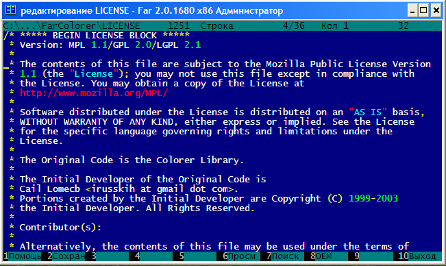

Основным режимом работы FarColorer является консольный. Подсветка синтаксиса производится с помощью стандартных средств консоли. Цвета ограничены возможностью консоли.
В FarColorer 1.0.2.10 появился новый режим - TrueMod. В этом режиме текст отображается в RGB режиме, и используются разные стили (bold/italic/underlined и т.п.).
Внимание. Поддержкой Far-truemod разработчики Far не занимаются.